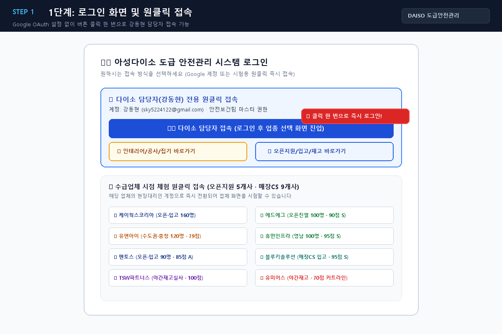

1
1단계: 로그인 화면 및 원클릭 즉시 접속
앱 주소에 접속하면 나타나는 첫 화면입니다. 복잡한 아이디/비밀번호 입력이나 Google OAuth 설정 없이도, 「👨💼 다이소 담당자 접속 (강동현)」 버튼을 누르면 즉시 모든 권한으로 로그인됩니다.
👉 실행 방법: 화면 가운데 파란색 큰 버튼 「👨💼 다이소 담당자 접속 · 강동현 (sky5224122@gmail.com)」을 클릭하세요!

▲ 화면 1: 로그인 화면에서 파란색 버튼을 누르면 담당자로 즉시 접속되며, 하단에는 8개 용역업체 시점 체험 버튼도 제공됩니다.